|
4-2-3-1
|
Portugal | 1 | - | 1 | Congo DR |
5-3-2
|
| HT 1-1 | ||||||
|
FIFA World CupWednesday 17 June 2026
|
||||||
- Venue
- Houston Stadium
- Attendance
- 68,777
- Referee
- Abdulrahman Ibrahim Al Jassim
Goal6'
João Neves
Assist: Pedro Neto
Yellow card13'
Bernardo Silva
Substitution46'
Bernardo Silva
Francisco Conceição
Substitution71'
Pedro Neto
Rafael Leão
Substitution72'
Nuno Mendes
Nélson Semedo
Substitution83'
Vitinha
Gonçalo Ramos
Yellow card88'
Nélson Semedo
Yellow card90+2'
Tomás Araújo
Whistle45+6'
45+6'
Yellow card32'
C. Mbemba
Goal45+5'
Y. Wissa
Assist: A. Masuaku
Substitution57'
N. Mukau
N. Sadiki
- 2
Substitution74'
E. Kayembe
C. Pickel
A. Masuaku
J. Kayembe
- 2
Substitution85'
A. Wan-Bissaka
G. Kalulu
C. Bakambu
S. Banza
Portugal | |
|---|---|
Goalkeeper | |
| 1 | Diogo Costa |
Defender | |
| 4 | Tomás Araújo 90+2' |
| 13 | Renato Veiga |
| 20 | João Cancelo |
| 25 | Nuno Mendes 72' |
Midfielder | |
| 8 | Bruno Fernandes |
| 10 | Bernardo Silva 13'46' |
| 15 | João Neves 6' |
| 18 | Pedro Neto 71' |
| 23 | Vitinha 83' |
Forward | |
| 7 | Cristiano Ronaldo |
Substitutes | |
| 2 | Nélson Semedo 72'88' |
| 9 | Gonçalo Ramos 83' |
| 17 | Rafael Leão 71' |
| 26 | Francisco Conceição 46' |
Congo DR | |
Goalkeeper | |
| 1 | L. Mpasi |
Defender | |
| 2 | A. Wan-Bissaka 85' |
| 3 | S. Kapuadi |
| 4 | A. Tuanzebe |
| 22 | C. Mbemba 32' |
| 26 | A. Masuaku 74' |
Midfielder | |
| 6 | N. Mukau 57' |
| 8 | S. Moutoussamy |
| 25 | E. Kayembe 74' |
Forward | |
| 17 | C. Bakambu 85' |
| 20 | Y. Wissa 45+5' |
Substitutes | |
| 12 | J. Kayembe 74' |
| 14 | N. Sadiki 57' |
| 18 | C. Pickel 74' |
| 23 | S. Banza 85' |
| 24 | G. Kalulu 85' |


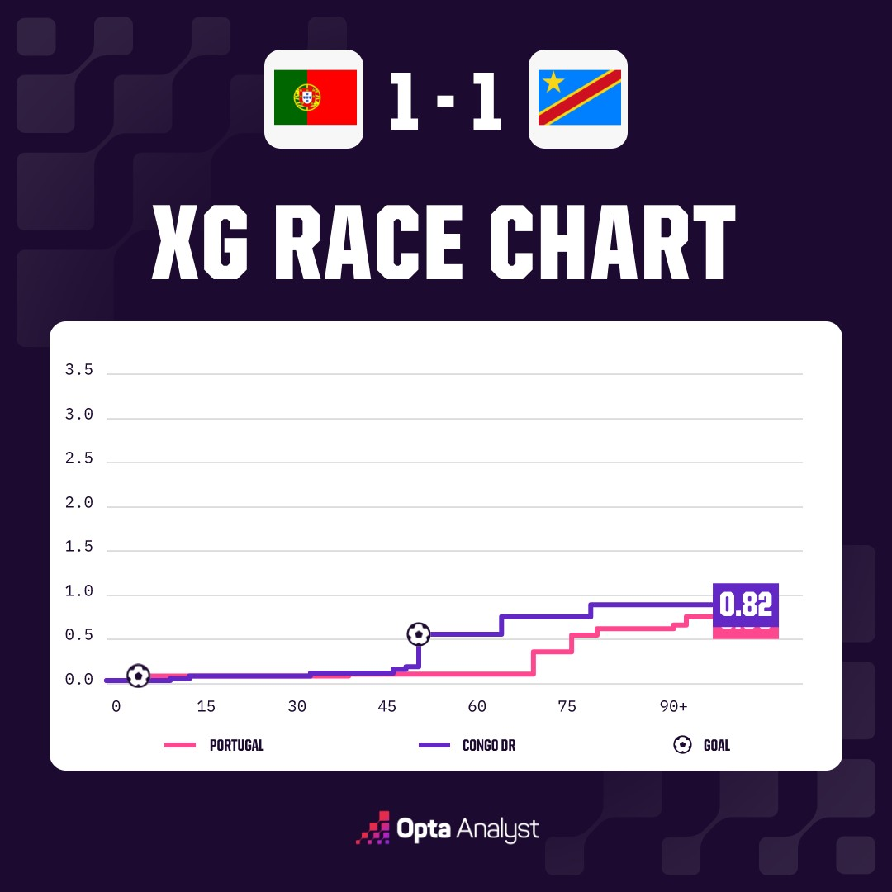
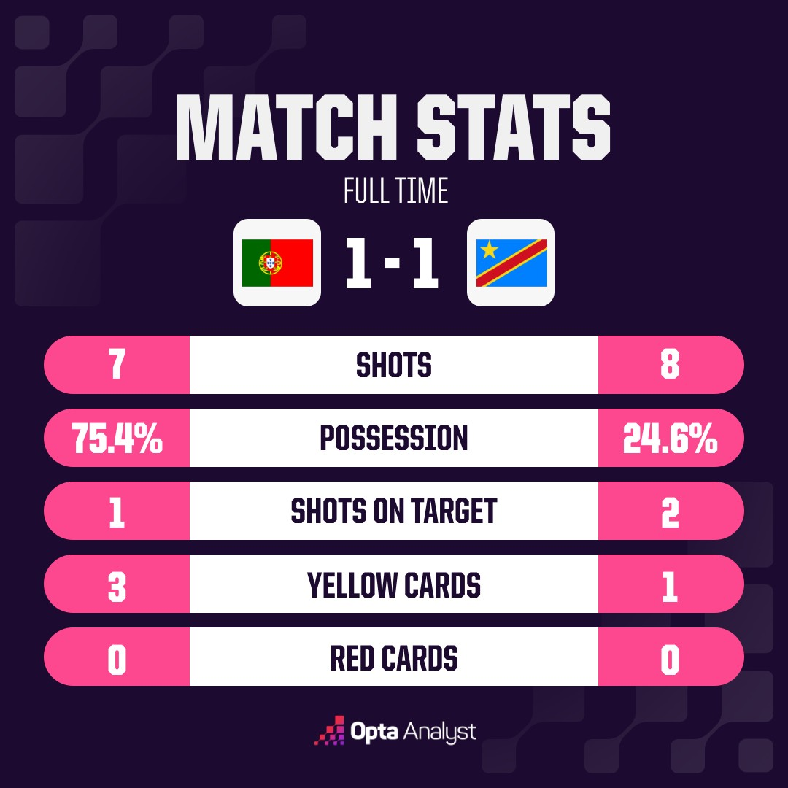
96'
Congo DR have failed to win in their last 4 games in the FIFA World Cup, their longest winless streak in the competition (since at least 1965/1966).
90+5'
That's it! The referee blows the whistle and we have reached full-time. The final score at Houston Stadium is Portugal 1-1 Congo DR.
90+2'
Yellow card! Tomás Araújo will have to be careful from now on after they are cautioned.
90+2'
Free-kick! A foul from Tomás Araújo on Yoane Wissa. It is well away from Portugal’s goal, so it is unlikely to result in a chance for Congo DR.
90+2'
MISS! The score remains 1-1, with Congo DR relieved after Portugal’s Cristiano Ronaldo goes for goal but sends their attempt off target. Not one to write home about, that one.
90+1'
A chance goes begging as Bruno Fernandes gets off a shot that does not hit the target. They might have done better with that one, but instead it is a goal-kick to Congo DR.
89'
A lull in this match, as the teams prob and probe, but without much success. It has been 10 minutes since there was an attempt from either side, though Portugal are seeing more of the ball, with 63 per cent possession to Congo DR’s 37 per cent during that time.
88'
BOOKING! Yellow card for Nélson Semedo, who is penalised for a foul. The referee waves away their remonstrations, and now they will have to be careful.
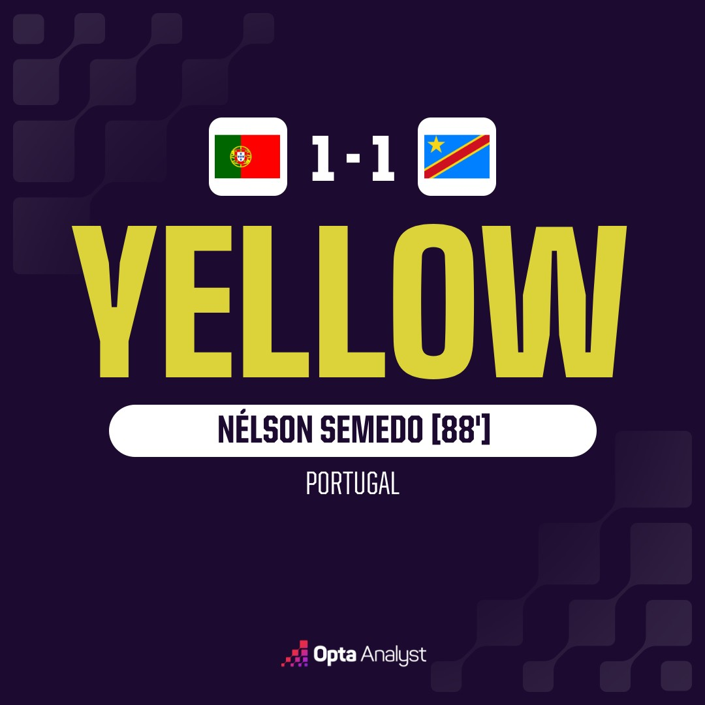
88'
A free-kick to Congo DR, as Nélson Semedo goes in and fouls Yoane Wissa. However, Portugal will not mind giving one away in this area too much, with plenty of distance to their goal.
85'
The Congo DR manager is looking to the substitutes’ bench, bringing on Simon Banza in place of Cédric Bakambu. Will the change make a difference? Let’s find out!
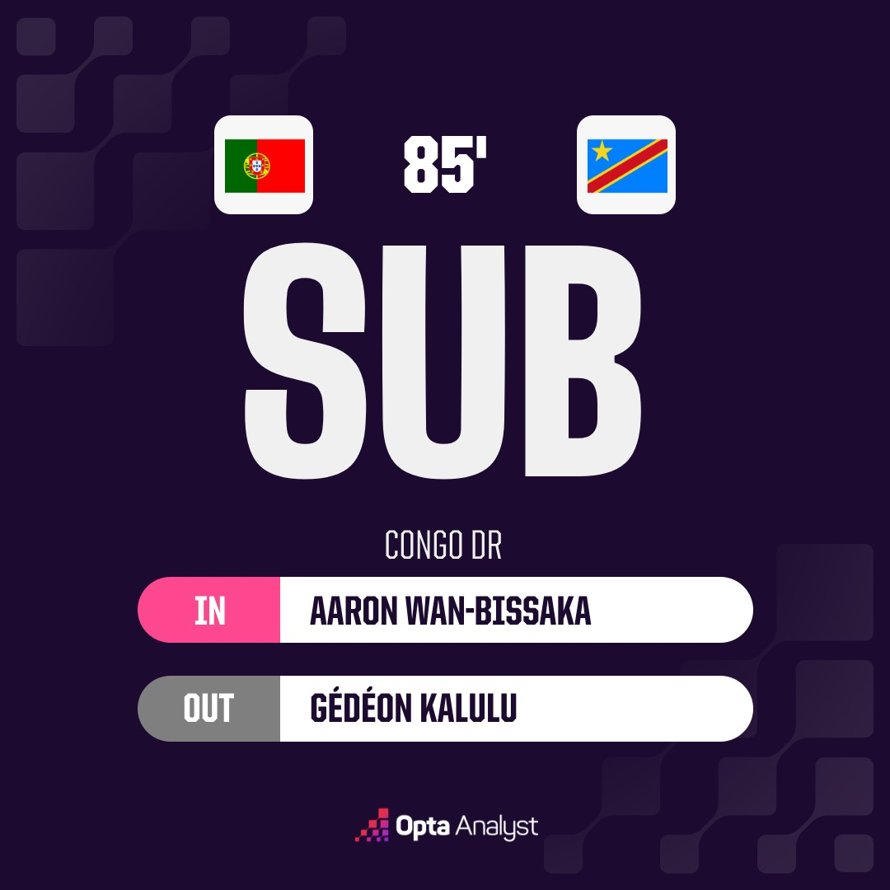
85'
Aaron Wan-Bissaka’s match is over as Congo DR decide to make a substitution. Gédéon Kalulu enters the field in what looks like a tactical change.
84'
In the last 15 minutes, it is Portugal who have dominated the ball, having seen 66.06% of the possession, yet they have not been able to go and turn that into a goal just yet, with their opponents standing firm.
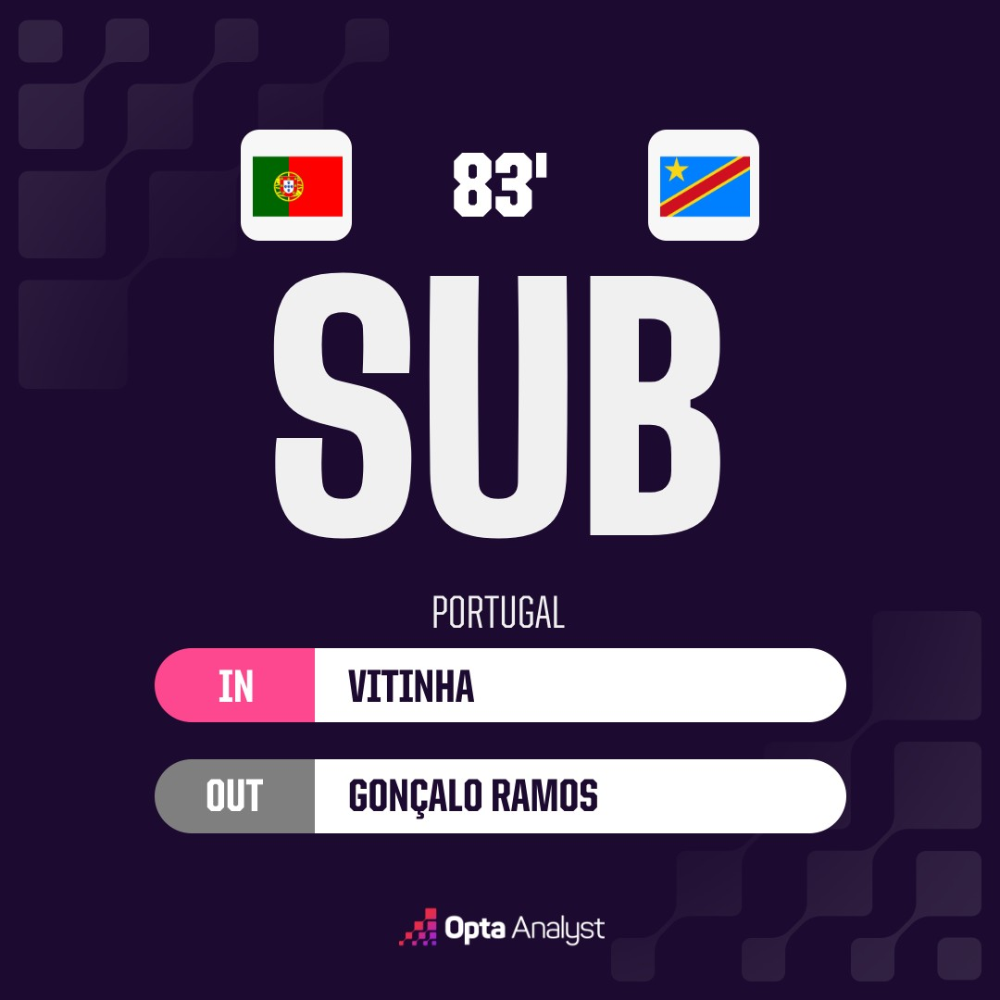
83'
Portugal are making a tactical change. Vitinha is leaving the field and in their place comes Gonçalo Ramos – we will soon see if this switch has the desired impact.
83'
A free-kick to Congo DR, as Francisco Conceição goes in and fouls Joris Kayembe. However, Portugal will not mind giving one away in this area too much, with plenty of distance to their goal.
80'
Congo DR offside trap works a treat as they step up and catch Francisco Conceição offside. Portugal are searching for a goal, but their players will need to play smarter to keep themselves on the right side of the line.
78'
A foul from Renato Veiga on Cédric Bakambu sees Congo DR win a free-kick, but it is not in a dangerous position, so Portugal should be confident they can defend it easily enough.
78'
That might have been going in! A fantastic block from Joris Kayembe, who gets in the way of a goal-bound effort from Francisco Conceição. Would the goalkeeper have been beaten? We will never know.
77'
MISS! A shot from Cédric Bakambu ends up being off target. They might have done a bit better with that one, but it remains Congo DR 1-1 Portugal.
77'
It is a corner now to Portugal, with Congo DR somewhat hanging on here as they look to hold out for a positive result. Can Portugal make something of this set-piece opportunity?
76'
There are 15 minutes plus added time to go in this match. Portugal have had more of the ball so far with a possession figure of 78.29%, while Congo DR have had 21.71%.
75'
Substitution! Joris Kayembe replaces Arthur Masuaku for Congo DR as the manager shuffles the pack. Can Joris Kayembe make an impression as this match continues?
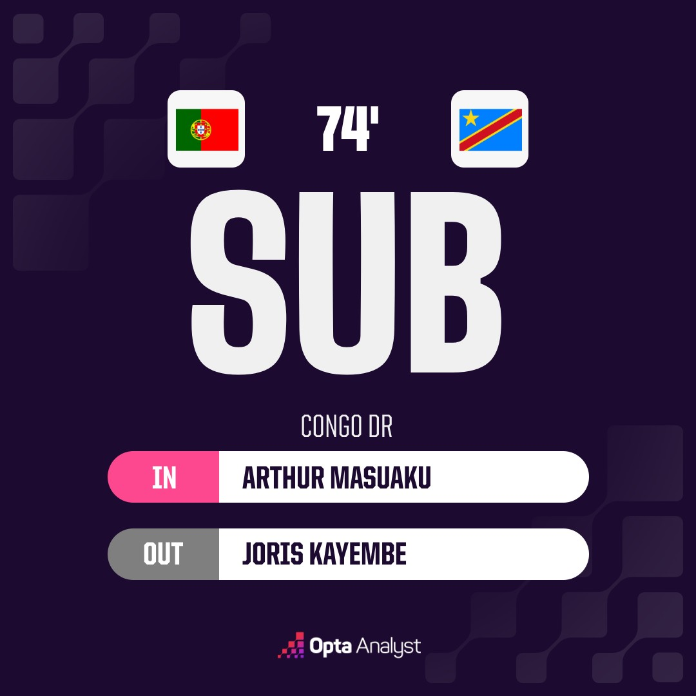
74'
Substitution! Charles Pickel replaces Edo Kayembe for Congo DR as the manager shuffles the pack. Can Charles Pickel make an impression as this match continues?
74'
MISS! The score remains 1-1, with Congo DR relieved after Portugal’s Cristiano Ronaldo goes for goal but sends their attempt off target. Not one to write home about, that one.
72'
Nuno Mendes’s match is over as Portugal decide to make a substitution. Nélson Semedo enters the field in what looks like a tactical change.
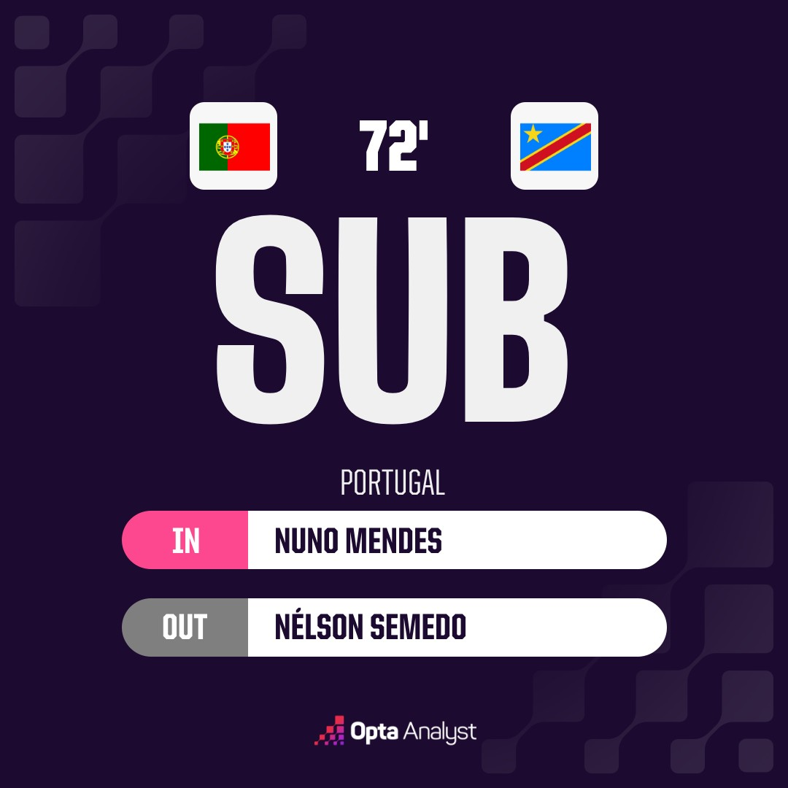
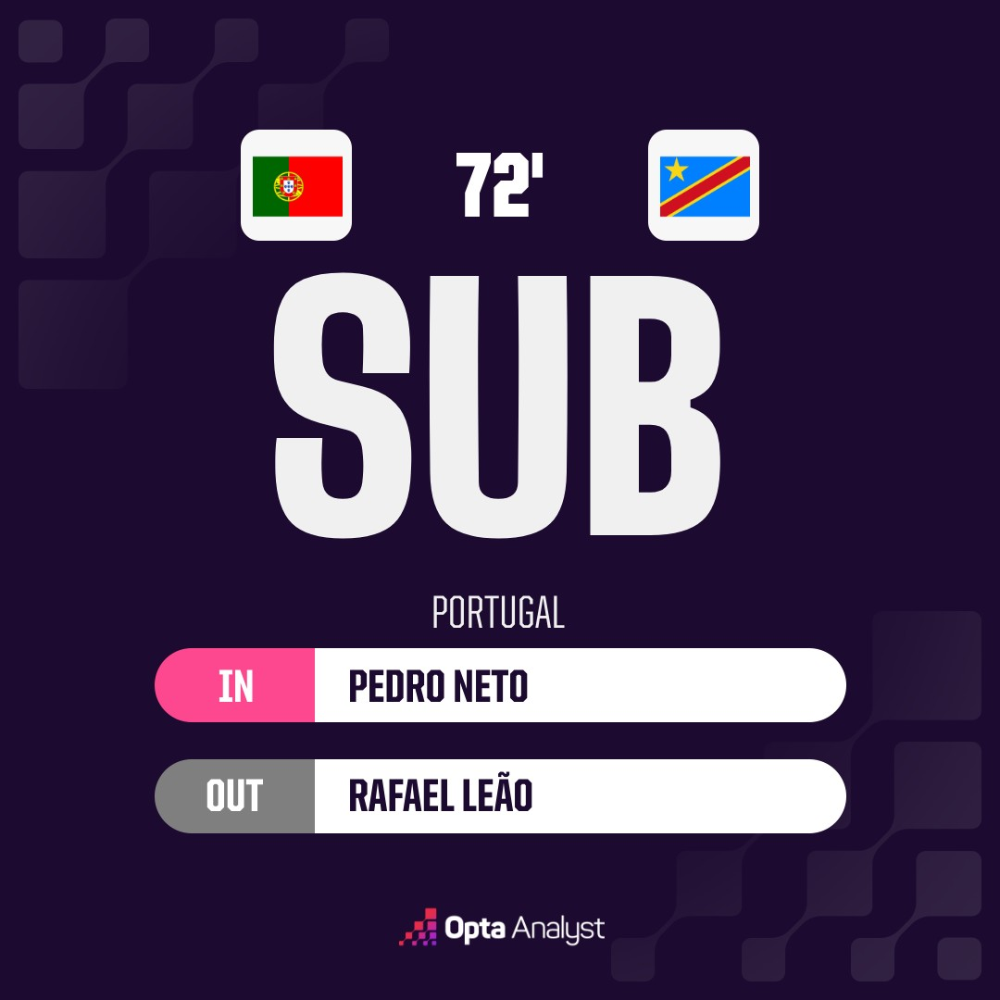
72'
The Portugal manager is looking to the substitutes’ bench, bringing on Rafael Leão in place of Pedro Neto. Will the change make a difference? Let’s find out!
68'
MISS! A shot from Cristiano Ronaldo ends up being off target. They might have done a bit better with that one, but it remains Portugal 1-1 Congo DR.
68'
There is plenty of possession for Portugal, with 81.63% compared to Congo DR 18.37% in the last 15 minutes. However, Portugal have not been able to turn that dominance of the ball into a goal.
67'
Can Portugal make this chance count? They have won a free-kick in a threatening position after a foul from Edo Kayembe on Nuno Mendes. Will Congo DR's defence be tested here?
66'
A free-kick in a dangerous position now for Portugal, after a foul from Samuel Moutoussamy on Nuno Mendes. Can Portugal make Congo DR pay for that rashness from Samuel Moutoussamy?
66'
This match is into the last 25 minutes now, and before it goes into the final stages, let’s check on the shots. There have been 9 in total – 2 from Portugal, and 7 from Congo DR. Of those attempts, 3 have hit the target – 1 from Portugal and 2 from Congo DR.
65'
Portugal have had plenty of the ball in the last 15 minutes, with 80.74% possession compared to just 19.26% for their opponents. However, there has not been any shot to come from that possessional dominance, which will be a huge frustration for their coach.
64'
A free-kick to Congo DR, as Bruno Fernandes goes in and fouls Edo Kayembe. However, Portugal will not mind giving one away in this area too much, with plenty of distance to their goal.
63'
MISS! A shot from Steve Kapuadi ends up being off target. They might have done a bit better with that one, but it remains Congo DR 1-1 Portugal.
61'
This game is certainly in a bit of a lull now, with neither team having had an attempt at goal in the past 10 minutes. It could do with something to spark it into life. Portugal have had more possession during the quiet spell, but are yet to do much with it.
58'
A foul from Aaron Wan-Bissaka on Nuno Mendes sees Portugal win a free-kick, but it is not in a dangerous position, so Congo DR should be confident they can defend it easily enough.
57'
A substitution for Congo DR sees Ngal'ayel Mukau replaced by Noah Sadiki. There does not appear to be any obvious sign of an injury, so that is a tactical switch.
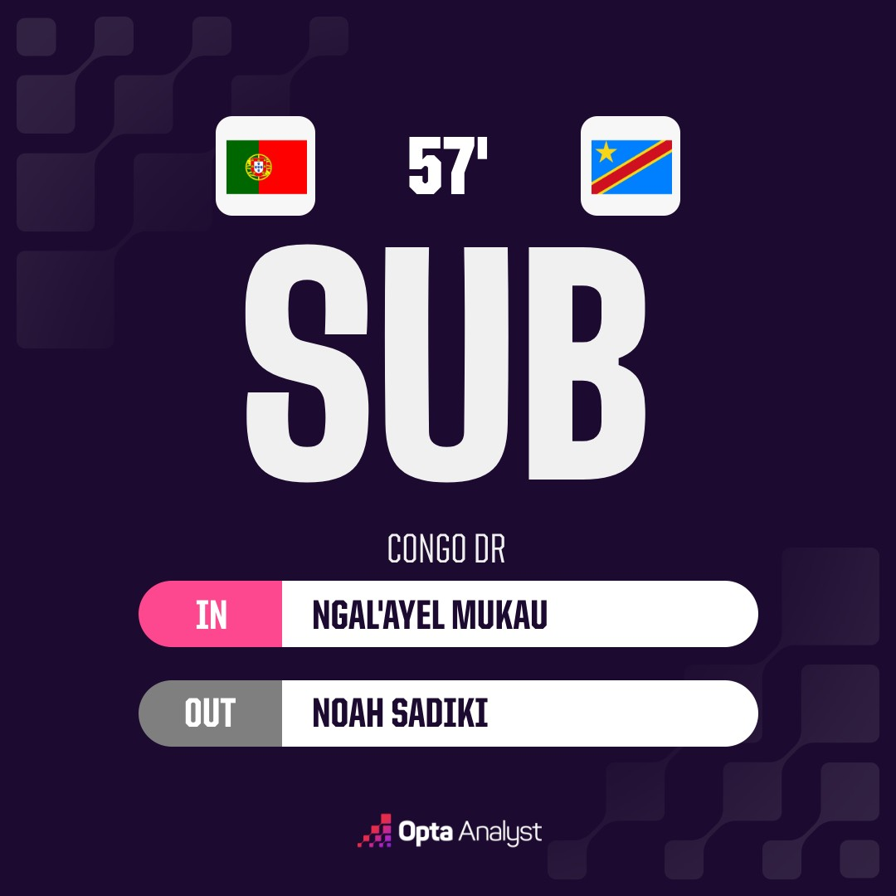
57'
A rash challenge from Cédric Bakambu, who sends Bruno Fernandes tumbling, giving Portugal a free-kick. It is not in a threatening position, but it gives them a chance to get back on the ball.
55'
A chance now for Congo DR to get a good delivery into the box, after the ball is diverted behind for a corner. Congo DR have been pushing for what would be a key goal, but Portugal have stood firm so far.
55'
Offside! João Cancelo thought they were through on goal, but the Congo DR defence stepped up in time to catch them offside, and the assistant referee puts their flag up.
50'
The Portugal defence steps up in time and there is a frustration for Cédric Bakambu, who thought they were through until the flag goes up to signal offside.
49'
Vitinha goes in on Yoane Wissa and concedes a foul. The free-kick is not in a particularly dangerous area from Portugal’s viewpoint, though.
46'
Can Portugal make this chance count? They have won a free-kick in a threatening position after a foul from Samuel Moutoussamy on Bruno Fernandes. Will Congo DR's defence be tested here?
46'
A substitution for Portugal sees Bernardo Silva replaced by Francisco Conceição. There does not appear to be any obvious sign of an injury, so that is a tactical switch.
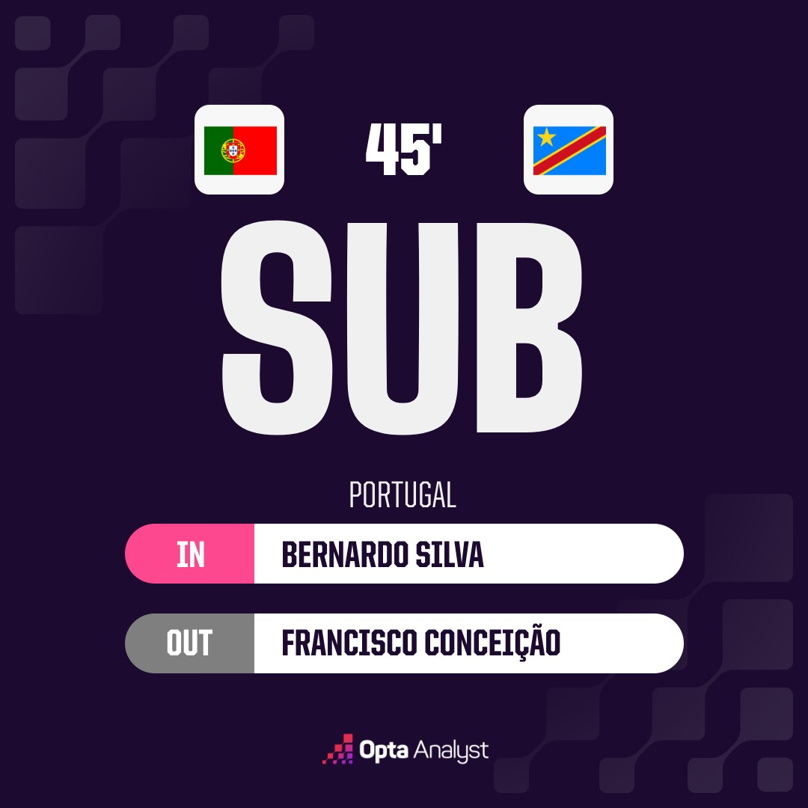
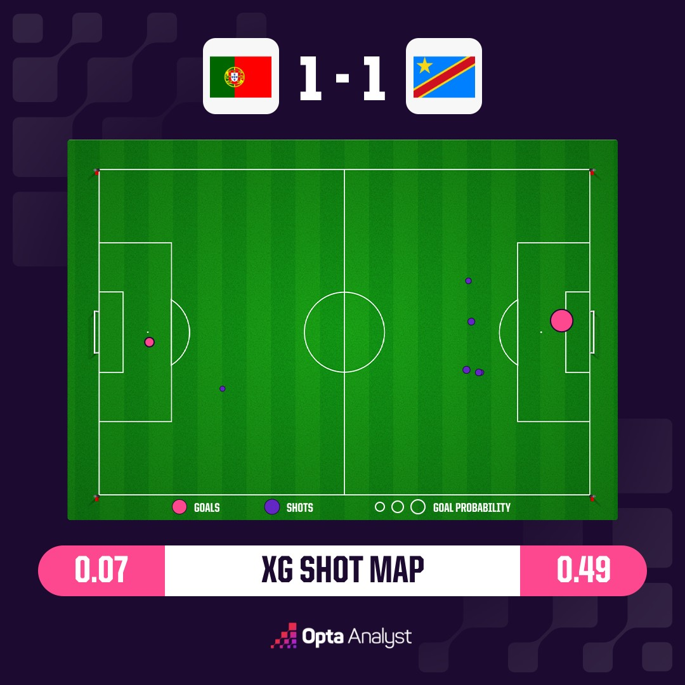
45+6'
Half-time! We reach the interval with the score level at 1-1 between Portugal and Congo DR. Will we see a winner in the second half?
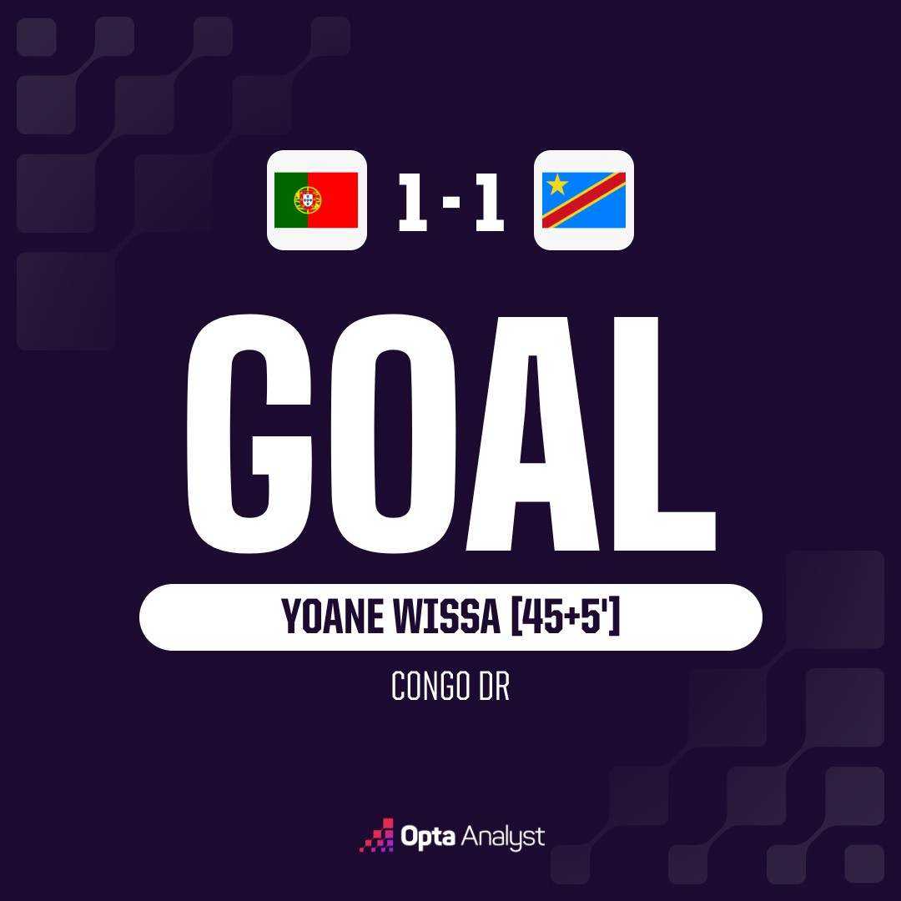
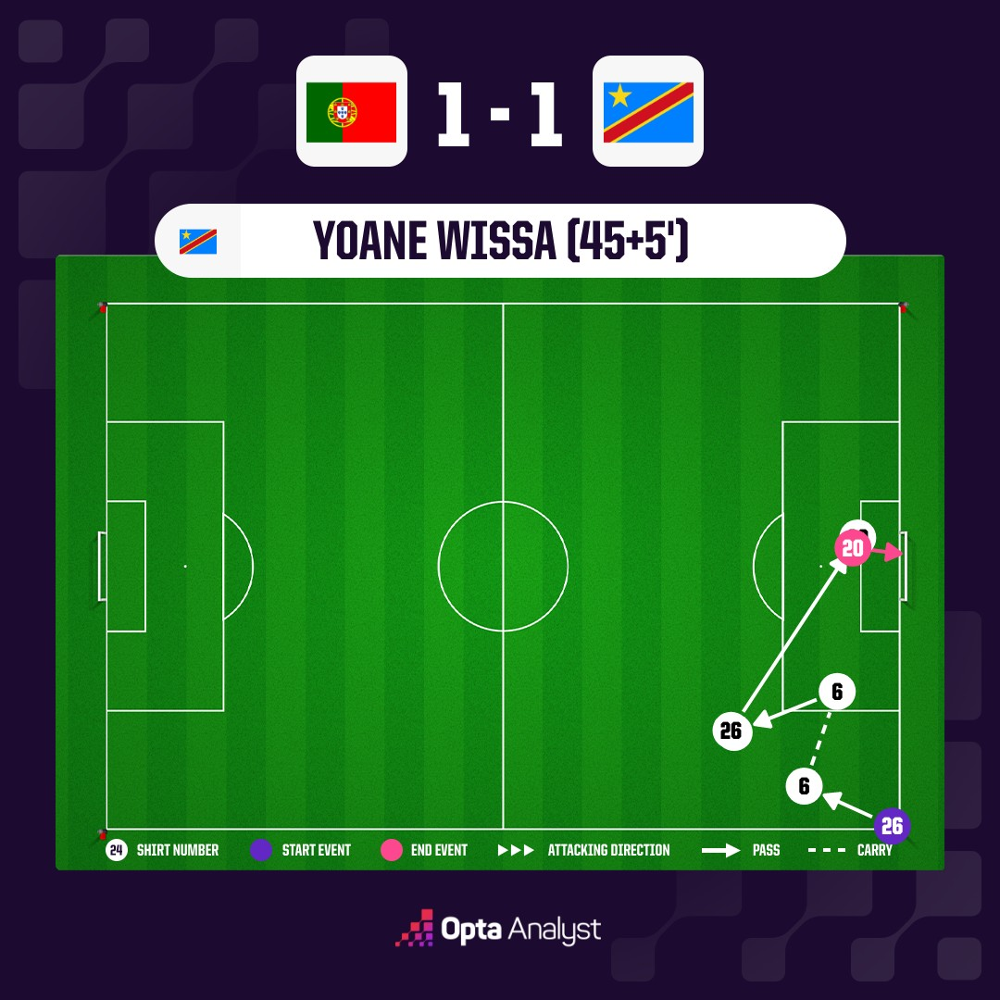
45+5'
GOAL! It isl level now, after Yoane Wissa’s finish from inside the penalty area. They found enough space to get a shot off, and now parity is restored. Can Congo DR take that momentum on and go and win it now?
45+4'
Corner! The ball goes behind and now Congo DR will aim to deliver a good ball into the penalty area and test that Portugal defence, which has been frustrating them in recent minutes.
45+3'
Samuel Moutoussamy's effort is deflected out for a corner. Can Congo DR make anything of this set-piece?
45+1'
A rash challenge from Yoane Wissa, who sends João Cancelo tumbling, giving Portugal a free-kick. It is not in a threatening position, but it gives them a chance to get back on the ball.
41'
A foul from João Cancelo on Arthur Masuaku sees Congo DR win a free-kick, but it is not in a dangerous position, so Portugal should be confident they can defend it easily enough.
39'
Portugal are having plenty of the ball, with 76.60% possession in the last 15 minutes. However, they have been unable to transfer that possessional dominance into a goal during that period.
39'
Shot blocked! Bruno Fernandes unleashes an attempt at goal, but the ball does not reach its target thanks to Chancel Mbemba, who makes a solid block to stem the danger – for now.
38'
Despite trailing, Congo DR are showing real defensive grit, digging in and stopping further damage as they try to build a platform.
37'
A free-kick to Portugal, as Edo Kayembe goes in and fouls João Neves. However, Congo DR will not mind giving one away in this area too much, with plenty of distance to their goal.
36'
Portugal are having plenty of the ball, with 80.79% possession in the last 15 minutes. However, they have been unable to transfer that possessional dominance into a goal during that spell, and are not even generating shooting opportunities, so Congo DR may not be unduly alarmed.
36'
It has been 30 minutes since Portugal last attempted a shot in this game.
34'
This is a team playing with assurance - Portugal string together a long sequence and look determined to take a lead into the interval.
33'
That was hopeful! A bit of a punt from Edo Kayembe, who goes for goal from distance, but Diogo Costa makes the save.
32'
A yellow card for Congo DR's Chancel Mbemba. They will have to walk a tightrope for the rest of this match, and Portugal will likely look to target them and draw a second bookable offence.
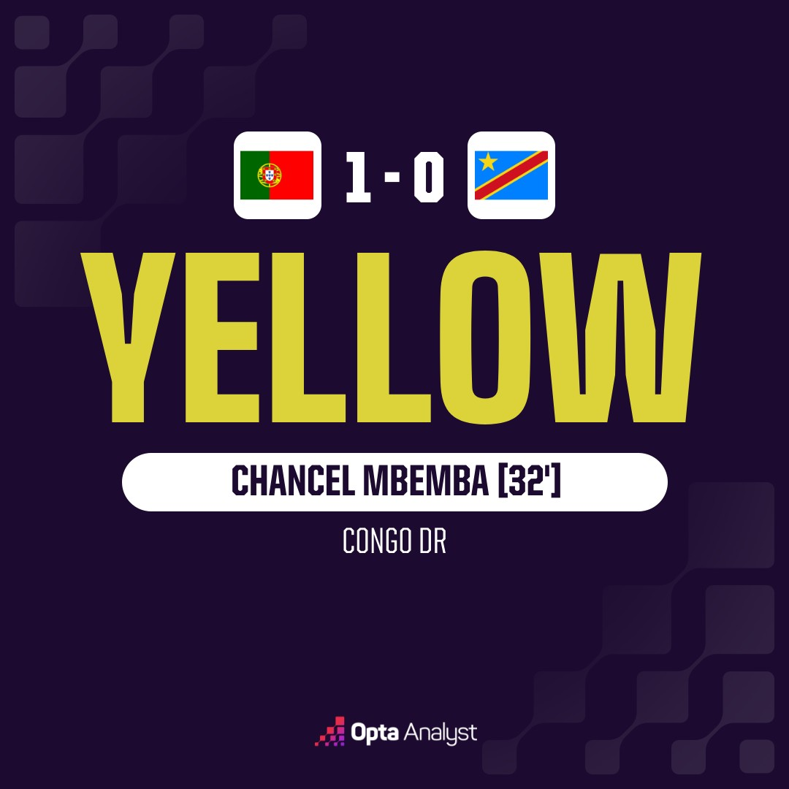
32'
This could be a chance for Portugal, after Chancel Mbemba fouls Pedro Neto, handing them a free-kick in a threatening area. A good set-piece from here could really test the Congo DR defense!
31'
A free-kick to Portugal, as Yoane Wissa goes in and fouls Renato Veiga. However, Congo DR will not mind giving one away in this area too much, with plenty of distance to their goal.
27'
Neither team has had a shot in the past 10 minutes, as this match just enters something of a down period. Portugal have seen more of the ball, with 82 per cent possession, but Congo DR are keeping them away from goal. There is still a chance the match will spark into life, though.
21'
Portugal are having plenty of the ball, with 72.40% possession in the last 15 minutes. However, they have been unable to transfer that possessional dominance into a goal during that spell, and are not even generating shooting opportunities, so Congo DR may not be unduly alarmed.
15'
Cédric Bakambu makes a run in behind but the Portugal defensive line were alert, and stepped up in time to catch them offside. That run just needed to be timed better.
14'
Cédric Bakambu's effort is deflected out for a corner. Can Congo DR make anything of this set-piece?
13'
That is a booking for Bernardo Silva, who has received their first yellow card. They are not happy with the decision, but it is done now, and they will have to be careful for the rest of this game.
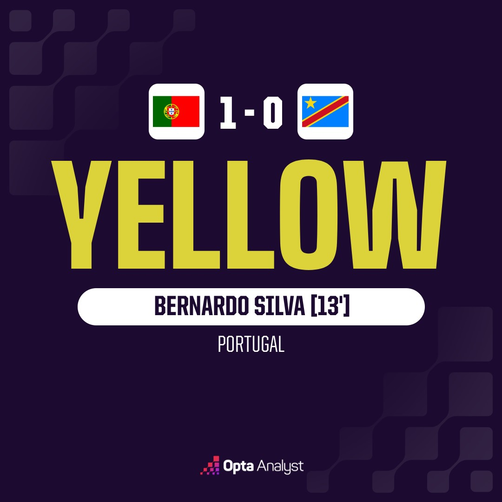
13'
A free-kick to Congo DR, as Bernardo Silva goes in and fouls Edo Kayembe. However, Portugal will not mind giving one away in this area too much, with plenty of distance to their goal.
11'
That is a disappointing effort from Yoane Wissa, who went for glory but got their attempt wrong, and the shot sailed off target. A frustrating moment for Congo DR.
10'
No luck – it’s offside! Nuno Mendes looked to dart in behind and get on the end of a pass, yet they just went too early, and the flag is up to signal offside.
7'
Congo DR still reeling from that early setback. They haven't managed a shot or even reached Portugal's final third in the past five minutes. Need to regroup quickly.
6'
GOAL! That is 1-0 to Portugal! It has not taken long for the first goal of the game to arrive, with João Neves finding the back of the net to put Portugal in front. That is just the start the neutral would have wanted to see, with plenty of scope for more goals now.
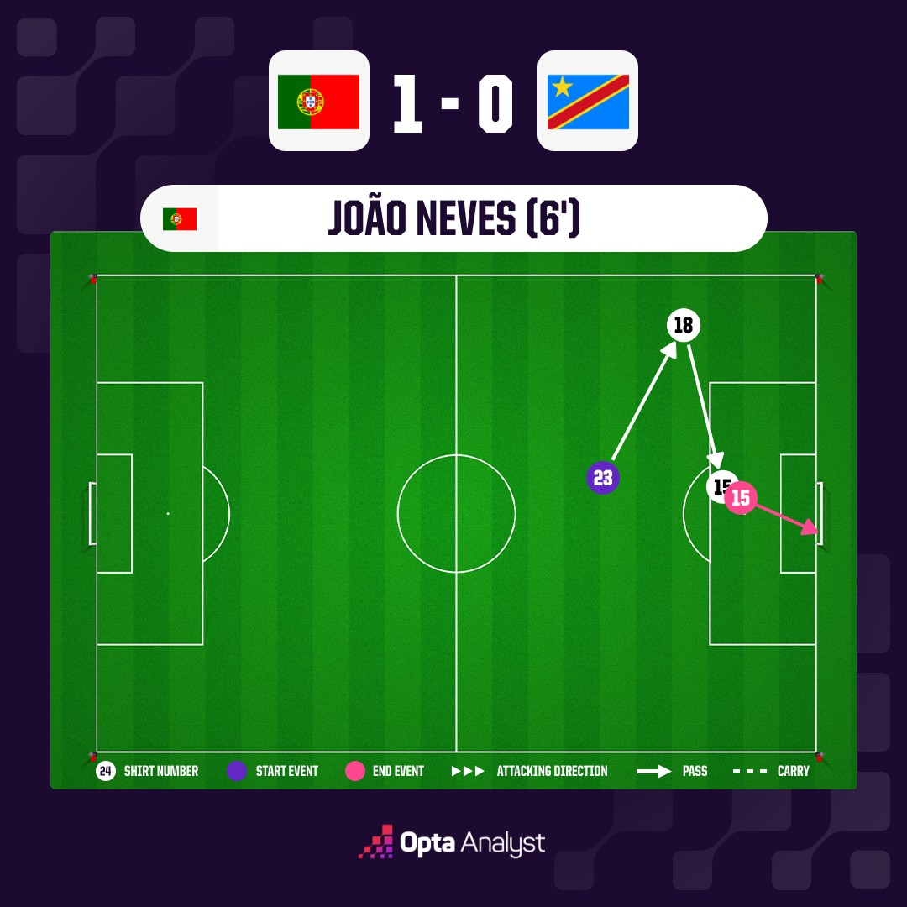
3'
Free-kick! A foul from João Cancelo on Samuel Moutoussamy. It is well away from Portugal’s goal, so it is unlikely to result in a chance for Congo DR.
3'
It’s been tight so far, and Congo DR are making sure it stays that way with strong defensive discipline and well-timed clearances.
1'
Portugal enjoying a strong spell early on - their passing rhythm is already clicking as they try to set the tone.
1'
Up and running! Portugal have kicked off and this FIFA World Cup match is now under way at Houston Stadium. Let’s hope for an intriguing battle on the pitch.
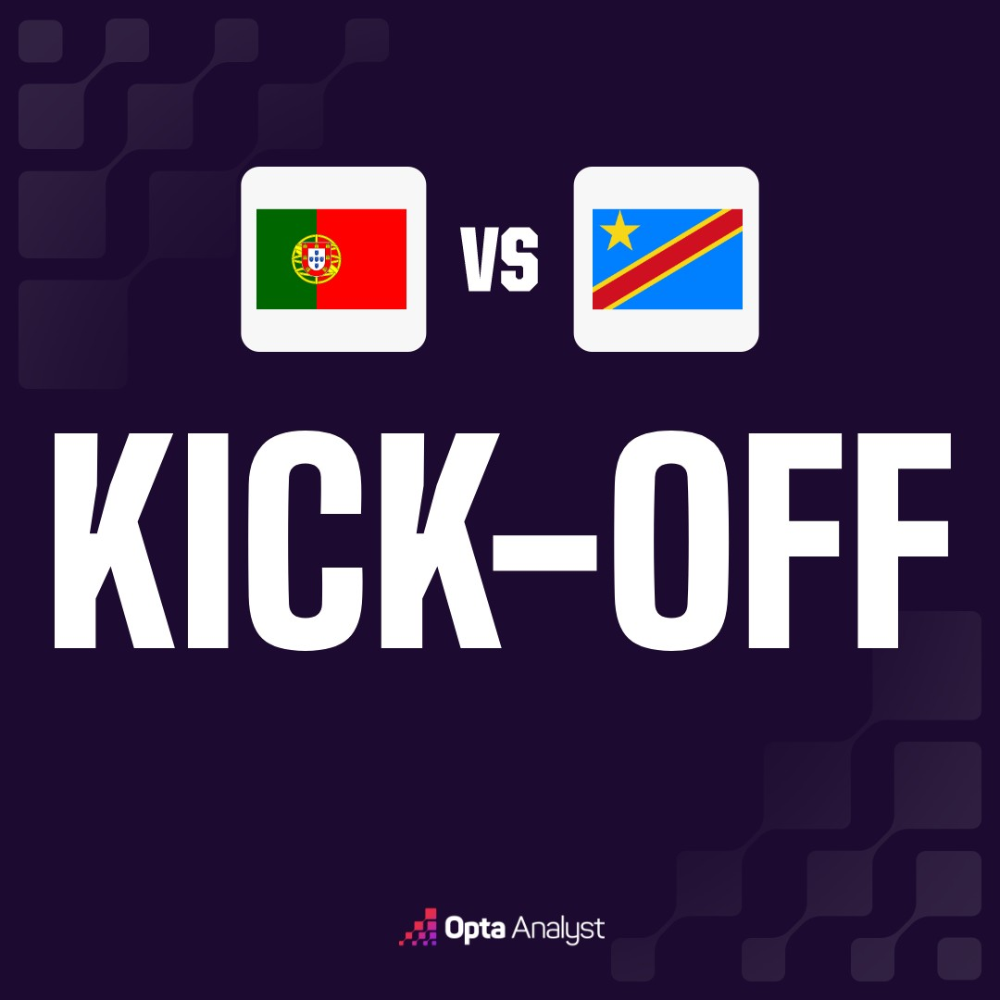
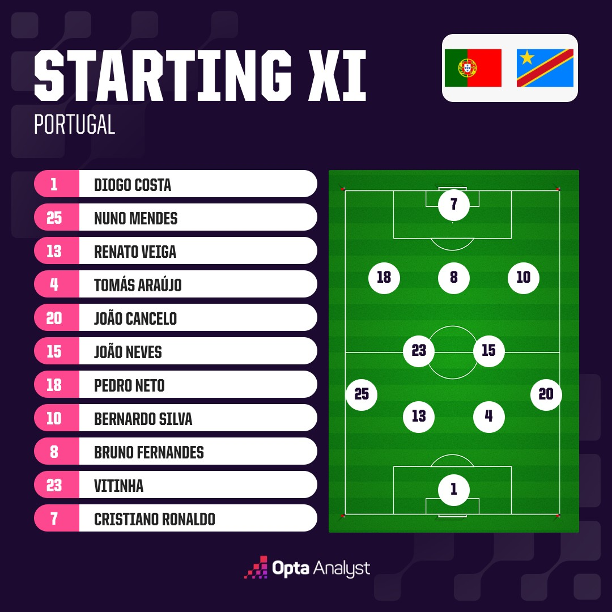
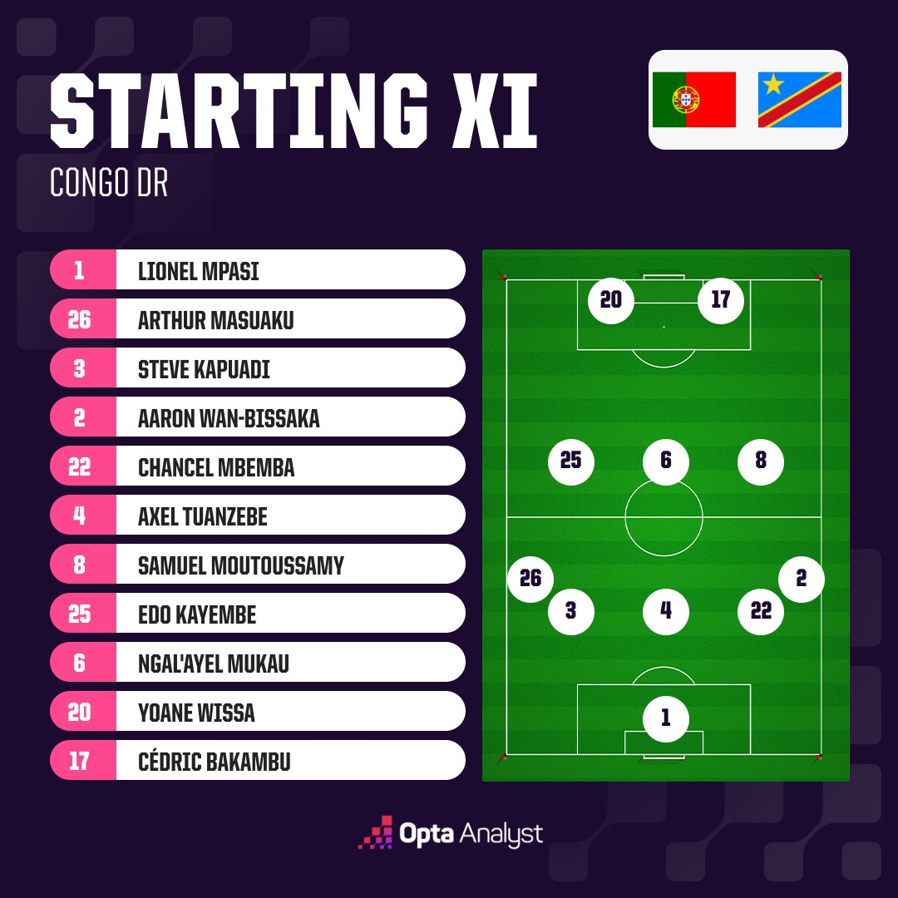
Cristiano Ronaldo is making his 23rd appearance in the FIFA World Cup.
Congo DR have kept a clean sheet in the last 3 matches
Portugal, unbeaten in five straight games, will put their run on the line against Congo DR in the FIFA World Cup group stage on Wednesday at Houston Stadium.
It's the first match of the competition for both sides. Portugal defeated Nigeria 2-1 in their last match, a June 10 friendly at Estádio Dr. Magalhães Pessoa. Pedro Neto and Francisco Conceição scored in the win.
Congo DR's last game saw them beaten 2-1 by Chile in a friendly on June 9 at Stade de la Source. Joris Kayembe was on the scoresheet in the loss. In 2026, they have won two, drawn one, and lost two.
Six players share the scoring lead for Portugal this year with one goal apiece. Congo DR have been led in 2026 by Kayembe and Axel Tuanzebe, who have each scored once.
In their last six matches in all competitions, Portugal have won four, drawn one and lost one. The Portuguese side scored 15 and conceded five in that period, scoring first in four of the six contests. They had seven first-half goals, while their opponents netted four times in the first 45 minutes. The Congo DR side have won three, drawn one and lost two in their last six. The Congo DR side scored seven and conceded three over that period, netting first in three of the six. They had three goals in the first half, while their opponents failed to find the net before the break.
-
General
Possession 75.4% 75.44224.55824.6% Possession lost in defensive half 19 194343 Possession lost in middle third 38 383232 Duels 77 778181 Duels success rate 44.2% 44.15651.85251.9% Aerial duels 17 171717 Aerial duels won 52.9% 52.94147.05947.1% Successful dribbles 5 588 Fouls won 10 1099 Offsides 3 322 Corner awarded 5 544 -
Distribution
Passes 783 783249249 Long passes 64 644040 Long passes proportion (%) 8.2% 8.17416.06416.1% Passing accuracy 92.5% 92.46578.31378.3% Passes in opponents' half 426 426134134 Passing accuracy in opponents' half (%) 89.0% 88.96773.13473.1% Total passes in the final third 207 2077373 Passing accuracy in final third (%) 85.0% 85.02468.49368.5% Forward passes 443 443165165 Forward passes (%) 56.6% 56.57766.26566.3% Through balls 2 200 Final third entries 101 1013535 Penalty area entries 39 391212 Total open play crosses 20 2088 Crosses 23 231010 Crossing accuracy 26.1% 26.0871010.0% -
Attack
Goals 1 111 Shots 7 788 Shots on target 1 122 Blocked shots 2 233 Headed shots 1 122 Shots outside the box 2 266 Shots inside the box 5 522 Shots accuracy excluding blocked shots 20.0% 204040.0% Shooting accuracy 14.3% 14.2862525.0% Key Passes 7 777 -
Defence
Tackles 12 121717 Tackles success rate 50.0% 5052.94152.9% Clearances 10 102727 Interceptions 3 355 Recoveries 41 413838 Attacking third recovery 3 322 Defensive third recovery 25 252525 Midfield third recovery 13 131111 Recoveries in attacking half (%) 7.3% 7.3175.2635.3% -
Discipline
Fouls conceded 9 91010 Yellow cards 3 311 Red cards 0 000